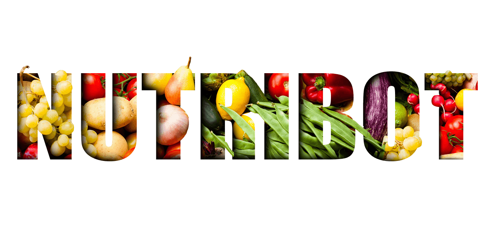

<ion-header class="header">
   
</ion-header>
<ion-content>
     <ion-fab top right edge>
        <button ion-fab mini class="btn-menu"><ion-icon name="menu"></ion-icon></button>
        <ion-fab-list>
            <div>
              <button ion-button class="slidemenu" (click)="login()">Sign In</button>
            </div>
        </ion-fab-list>
     </ion-fab>

    <iframe id="bot"
     src="https://console.dialogflow.com/api-client/demo/embedded/d3cbe6f8-3054-480d-9c22-2ab03220783c">
    </iframe>
</ion-content>

